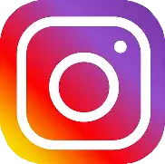
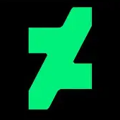

Hello! I am a young artist who likes to make art for fun. I have been making digital art for over 3 years.
I have been inspired by many things over the years, including my favorite video games and shows:
I've always been a fan of indie projects. Since I was a child, I had always been facinated by how entire worlds could be built by so few people. Watching animated shows and movies has also inspired me to try out some animating myself (although I am still very new to it)!
Follow me on Instagram and Deviantart!
 